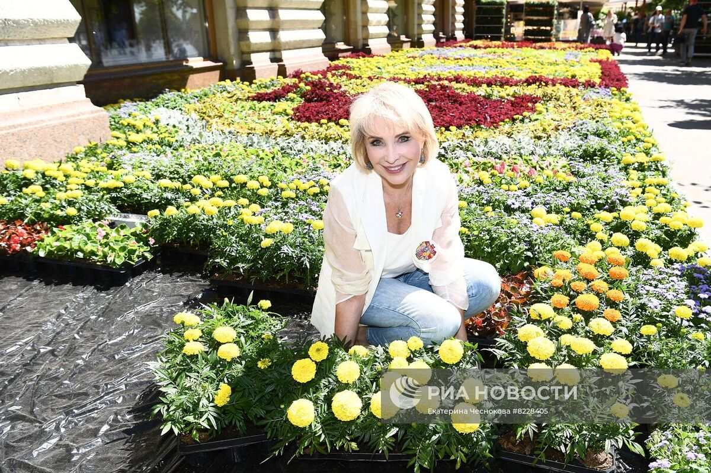
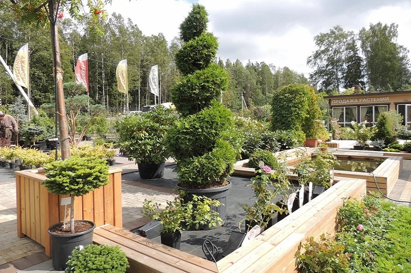
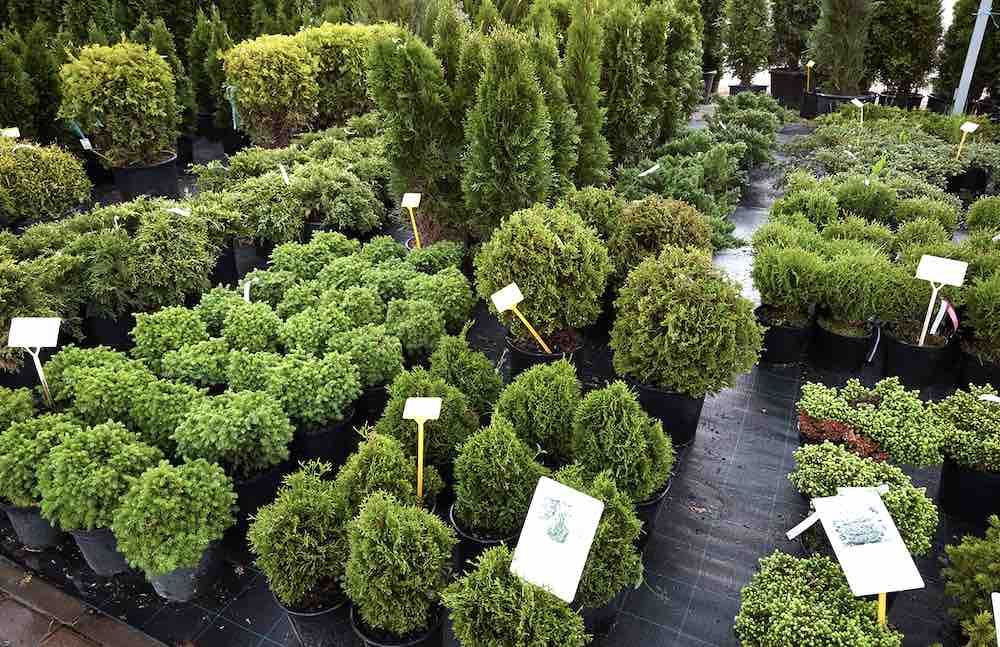

Сегодня, 26 февраля, состоялось торжественное открытие нового питомника растений в нашем городе. Это мероприятие стало настоящим событием для всех любителей зелени, флористов и садоводов, которые могут теперь приобретать качественные и здоровые растения у нас на месте.
Питомник представляет собой огромную территорию в 5 гектаров, на которой выращиваются более 500 видов различных растений, как декоративных, так и плодовых. Сотрудники питомника профессионально ухаживают за всеми растениями, используя только самые передовые методы выращивания.
Одним из преимуществ питомника является возможность приобретения растений по оптовой цене. Так, садоводы, ландшафтные дизайнеры, цветочные магазины и другие организации, занимающиеся продажей растений, могут заказывать большие партии растений по оптовым ценам и получать скидки.
Свершилось: мы открыты!

О новоиспеченном питомнике

Еще немного информации
В питомнике вы можете найти растения для оформления ландшафтов, украшения домов и офисов, а также для создания комнатных садов и террариумов. Наша коллекция включает в себя цветы, деревья, кустарники, виноград, фруктовые деревья и кустарники, различные сорта трав и многие другие растения.
Помимо продажи растений, мы также предоставляем консультации по их выращиванию и уходу. Наши специалисты помогут вам выбрать наиболее подходящие растения для вашего региона, подскажут, как правильно посадить и ухаживать за ними, чтобы получить богатый урожай или красивый сад.
Помимо продажи растений, мы также предоставляем консультации по их выращиванию и уходу. Наши специалисты помогут вам выбрать наиболее подходящие растения для вашего региона, подскажут, как правильно посадить и ухаживать за ними, чтобы получить богатый урожай или красивый сад.

Скидки в честь открытия
В честь открытия питомника мы проводим акцию на все растения – скидка 20% на каждую покупку. Кроме того, мы готовы подарить каждому покупателю нашу бесплатную книгу по выращиванию растений, которая содержит множество полезных советов и рекомендаций.
Питомник растений – это не только место для покупки качественных и здоровых растений, но и место для общения.
Питомник растений – это не только место для покупки качественных и здоровых растений, но и место для общения.